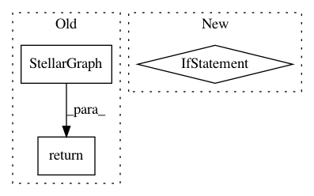

11621bdf5d179b12e4f6d00404b9528aa4a268bf,tests/core/test_stellargraph.py,,example_weighted_hin,#Any#,621
Before Change
graph.add_nodes_from([2, 3], label="B")
graph.add_weighted_edges_from([(0, 1, 0.0), (0, 1, 1.0)], label="AA")
graph.add_weighted_edges_from([(1, 2, 10.0), (1, 3, 10.0)], label="AB")
return StellarDiGraph(graph) if is_directed else StellarGraph(graph)
def example_unweighted_hom(is_directed=True):
graph = nx.MultiDiGraph() if is_directed else nx.MultiGraph()
After Change
def example_weighted_hin(is_directed=True):
edge_cols = ["source", "target", "weight"]
cls = StellarDiGraph if is_directed else StellarGraph
return cls(
nodes={"A": pd.DataFrame(index=[0, 1]), "B": pd.DataFrame(index=[2, 3])},
edges={
"AA": pd.DataFrame(
In pattern: SUPERPATTERN
Frequency: 4
Non-data size: 3
Instances
Project Name: stellargraph/stellargraph
Commit Name: 11621bdf5d179b12e4f6d00404b9528aa4a268bf
Time: 2020-02-04
Author: Huon.Wilson@data61.csiro.au
File Name: tests/core/test_stellargraph.py
Class Name:
Method Name: example_weighted_hin
Project Name: stellargraph/stellargraph
Commit Name: e78ff4e8d17073979c997576faf94cec3d4e0152
Time: 2018-09-09
Author: docherty@gmail.com
File Name: tests/data/test_stellargraph.py
Class Name:
Method Name: example_hin_1
Project Name: stellargraph/stellargraph
Commit Name: e78ff4e8d17073979c997576faf94cec3d4e0152
Time: 2018-09-09
Author: docherty@gmail.com
File Name: tests/data/test_stellargraph.py
Class Name:
Method Name: example_stellar_graph_1
Project Name: stellargraph/stellargraph
Commit Name: b17c639862ab1b9ab14e8c55a70e0ce002967e3f
Time: 2020-03-03
Author: Huon.Wilson@data61.csiro.au
File Name: tests/mapper/test_link_mappers.py
Class Name:
Method Name: example_HIN_homo